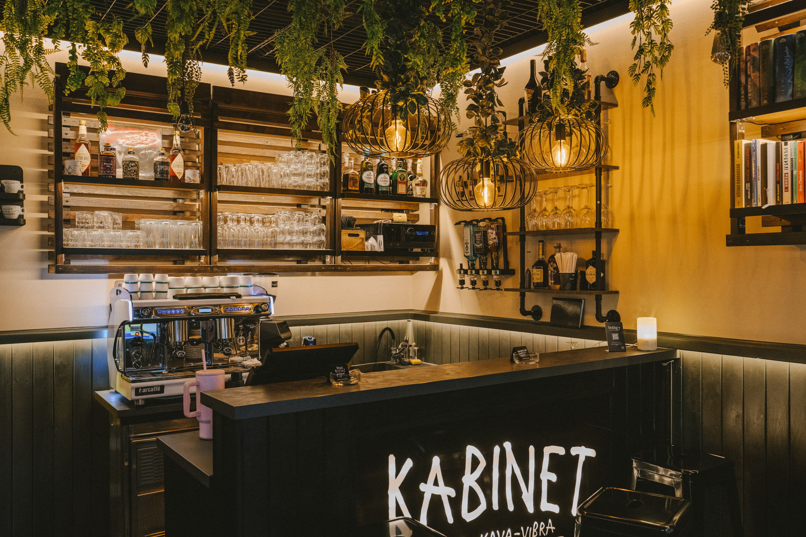

Ovdje su prikazani moji dosadašnji projekti.

Projekt 1 - Redizajn web stranice
Redizajn postojeće web stranice frizerskog salona Studio B napravljen kao završni rad
u Školi za grafiku, dizajn i medijsku produkciju. Cilj projekta bio je modernizirati izgled i poboljšati
korisničko iskustvo kroz čišći dizajn, bolju tipografiju i responzivni prikaz na svim uređajima.
Pogledaj

Projekt 2 - Osobni Portfolio
Osobna portfolio stranica osmišljena za mladog fotografa koji živi u gradu.
Fokus je bio na jednostavnom i elegantnom prikazu galerije fotografija.
Pogledaj

Projekt 3 - Café Kabinet
Dizajn konceptualne web stranice za mali kafić s modernim vizualnim identitetom.
Stranica uključuje pregled menija, kontakt formu i lokaciju.
Pogledaj